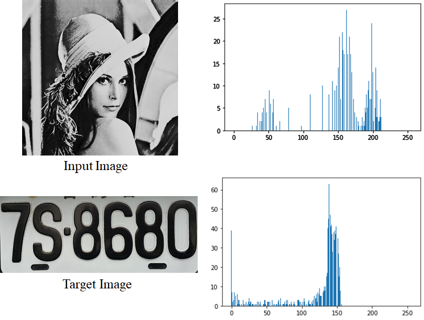

Brief Description: Histogram Matching is an image processing technique aimed at finding a transformation that adjusts the intensity distribution of one image so that it resembles the histogram of a reference image. The main idea is to do the transformation via uniform distribution obtained from histogram equalization algorithm.
